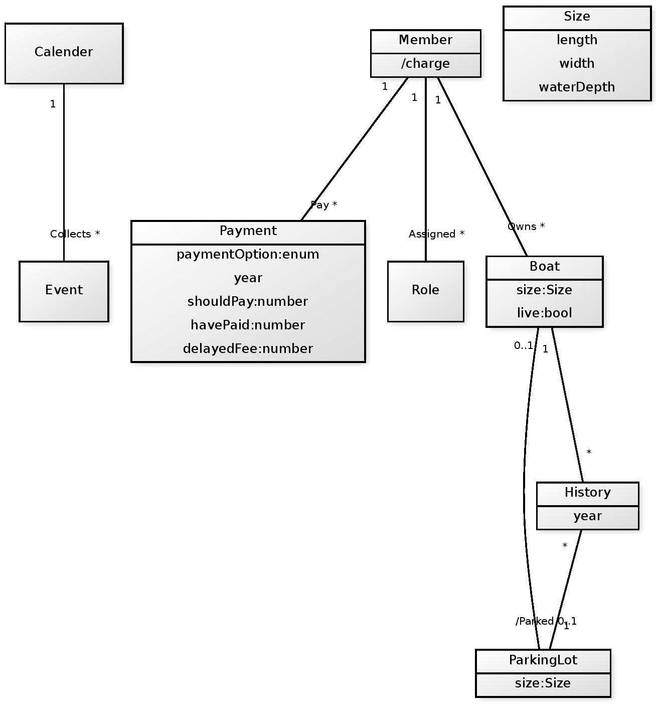

Workshop1 - Domänmodellering.
Domänmodellering enligt problembeskrivning för betyg 3.

Complementing text to domain model grade 3
The attribute /charge on member object is derived from firstly a mandatory member fee and a floating fee based on the amount of boat parking and the ParkingLot size. /chardge = member fee +(boat(s)*size).
We have added an Size object which handle compare about boats and a their size relative to the ParkingLot of the boats to give a good matching from a size perspective. And since Member and Boat has a association it is possible to make system match members boats as close as possible.(User case 4,8)
Object Role is created for the secretary to have a special role according to system requirements. I choose a system using roles over grouping because i find it more suitable to only add 1 Member to a role rather then forcing all members into groups.(User Case 13)
On object Payment there is an attribute called paymentOption which is an enum that represent different payment system from third party solutions. I could have displayed on Model that our third party inherit from payment but choose not to for understanding of Model.(user case 2)
Calender and Event is a separate model from the other model. I Assume a programmer knows that Event is date based and a calendar also is so i did not model the attributes and relations. The requirement for secretary to handle booking of events is a system solution that is accessed through the secretary Role from other model.(user case 7,8,9,10,11,12)
Domänmodellering enligt problembeskrivning för betyg 4.
Complementing text to domain model grade 4 this text is a complementing text to the one about grade 3 above.
In this model we decided to add an attribute live to our Boat object. It is there for our system to show if the boat is currently parked or not. System will need that when handle bookings based on current and historical data. The association /parked is derived from this algorithm when handling bookings.(user case 7)
Object History is just yearly data consisting data from Members,Boats and Parkinglot objects(user case 8).
Payment object has been given 4 new attributes. Year: To show yearly data, (User Case 7). ShouldPay: and havePaid: is two numbers that is compared to see if member has dept for that year.(User Case 7) delayedFee: 25% tex if late payment. (User Case 7)
Sammanfattning
Man skulle kunna skriva hur mycket som helst, men det är svårt att få en bra balans. Det känns spontant som jag varit något övertydlig i beskrivningen av modellen, men ibland kan det va bra att fläka på. // David